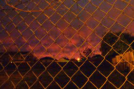

As you continue through the kitchen you see a door. You open the door and take a look outside. It seems to be a backyard. You decide you've had enough with this haunted house. You never should've come. You jog outside before hearing a howl behind you. You take a glance back, seeing a giant werewolf behind you. You run as fast as you can until you stumble into a fence. Realizing you are cornered you turned around and stab the werewolf. He howls in pain as he clutches his wound and backs off. He scream "Curse silver" as he backs away. Taking your chance you climb the fence and leap over it. You go around the house and back into your car and speed off as fast as you can.
Ending 4(There are 7 endings)